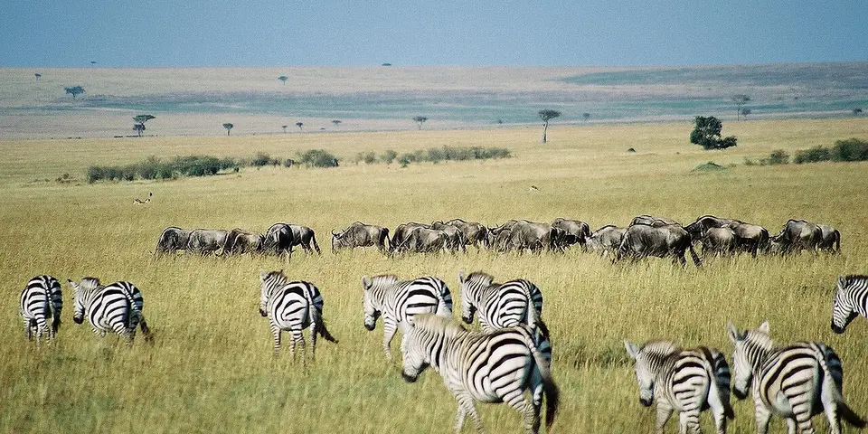

Sub-Saharan Africa
Kenya on a budget
Classic safari country on a budget, with cheap camping safaris to the Maasai Mara, cycling among zebras at Hell's Gate and a laid-back Swahili coast in Lamu and Diani.
Photo: Key45, CC BY 2.0, via Wikimedia Commons

Classic route
Nairobi, a camping safari in the Maasai Mara, then the coast at Diani and Lamu. 2 weeks.
Before you go
Flights to Nairobi: Skyscanner · Kiwi.com · Google Flights
Hostels and guesthouses in Nairobi · Maasai Mara · Diani Beach · Lamu
Tours and tickets: Nairobi · Maasai Mara
Mobile data: Kenya eSIM
Travel insurance: SafetyWing
How much 24 places in Kenya cost
Daily budgets per person in US dollars: a hostel dorm or simple guesthouse, local food, local transport and the usual entry fees.
-
Nairobi
Giraffes graze against a skyline backdrop in Nairobi National Park, and baby elephants come in for their morning feed at the elephant orphanage.
Bed $15 · Food $8 · Getting around $4 · Extras $6
Budget tip: Use matatus (minibuses) by day and taxis at night. Book the elephant orphanage's morning visiting hour ahead, as it is short and popular.
$33per day -
Maasai Mara
Lions, cheetahs and leopards stalk the open savanna, and the wildebeest migration thunders across the Mara River from July to October.
Bed $25 · Food $10 · Getting around $20 · Extras $130
Budget tip: Budget camping safaris from Nairobi include food and park fees. Three-day trips are the best value, as the long drive eats into shorter ones.
$185per day -
Diani Beach
A long white-sand beach south of Mombasa, with colobus monkeys swinging through the coastal forest and kitesurfing on the reef lagoon.
Bed $18 · Food $9 · Getting around $4 · Extras $6
Budget tip: Stay in budget hostels and lodges set back from the beach. Tuk-tuks are cheap for getting along the beach road.
$37per day -
Lamu
No cars here, just donkeys, dhows and carved wooden doors on coral-stone houses in a centuries-old Swahili town on the Indian Ocean.
Bed $18 · Food $8 · Getting around $4 · Extras $4
Budget tip: Dhow sailing trips are cheap if you share. Join other travellers for a sunset sail or a snorkeling day with a grilled fish lunch.
$34per day -
Amboseli
Big elephant herds wander the swamps with snow-capped Kilimanjaro rising behind them, one of Africa's classic safari views.
Bed $25 · Food $10 · Getting around $20 · Extras $90
Budget tip: Join a camping safari from Nairobi to save money. Mornings have the clearest mountain views before the clouds roll in.
$145per day -
Iten
Highland town known as the home of champion runners, perched on the Kerio Valley escarpment with dawn running camps.
Bed $12 · Food $7 · Getting around $3 · Extras $3
Budget tip: Join a local running camp or trail run, and use matatus from Eldoret for a cheap ride.
$25per day -
Mombasa
Explore Portuguese-built Fort Jesus and the carved doors and narrow lanes of the Swahili old town, then eat spiced biryani nearby.
Bed $15 · Food $8 · Getting around $3 · Extras $4
Budget tip: The Madaraka Express train from Nairobi is cheap and comfortable. Eat at old town cafés for cheap Swahili street food like mahamri and chai.
$30per day -
Kakamega Forest
Kenya's only tropical rainforest, alive with rare birds, butterflies and colobus monkeys along shady guided trails.
Bed $12 · Food $7 · Getting around $4 · Extras $8
Budget tip: Hire a forest guide at the gate to spot the wildlife. Basic bandas are cheap places to sleep inside the forest.
$31per day -
Kilifi
Creekside town between Mombasa and Malindi with a relaxed beach scene, dhow sailing, kitesurfing and the Mnarani ruins.
Bed $15 · Food $8 · Getting around $3 · Extras $5
Budget tip: Stay at a simple beach hostel near Bofa beach and use tuk-tuks to get around for a fraction of taxi prices.
$31per day -
Watamu
A marine park of turtles and coral gardens, plus the ruined Swahili town of Gede hidden in the coastal forest.
Bed $16 · Food $9 · Getting around $3 · Extras $6
Budget tip: Shared snorkel trips by boat are cheap. Matatus run from Malindi, so you don't need a taxi.
$34per day -
Malindi
Coastal town with the Vasco da Gama pillar, Malindi Marine Park reefs and Italian-run gelato shops near the beach.
Bed $15 · Food $8 · Getting around $3 · Extras $10
Budget tip: Visit the Gede ruins nearby by matatu, and book glass-bottom boat trips at the park gate rather than through hotels.
$36per day -
Lake Baringo
Freshwater lake known for over 450 bird species, hippos, crocodiles and Il Chamus fishing villages around its shores.
Bed $12 · Food $8 · Getting around $6 · Extras $10
Budget tip: Book boat trips with local operators in Kampi ya Samaki and share with others; early morning is best for birds.
$36per day -
Lake Naivasha
A freshwater lake full of hippos and fish eagles, with walking safaris among giraffes and zebras on Crescent Island.
Bed $15 · Food $8 · Getting around $4 · Extras $15
Budget tip: Camp on the lakeshore for the cheapest nights. Share a boat to Crescent Island with other travellers to split the cost.
$42per day -
Lake Bogoria
Steaming geysers and hot springs along a soda lake where huge flocks of lesser flamingos feed under the Siracho escarpment.
Bed $12 · Food $8 · Getting around $8 · Extras $20
Budget tip: Combine with Lake Baringo by matatu from Nakuru, and bring water since there are few shops at the reserve.
$48per day -
Hell's Gate
Cycle past zebras, giraffes and buffalo, then hike down a narrow gorge with hot springs and towering red cliffs.
Bed $15 · Food $8 · Getting around $5 · Extras $25
Budget tip: One of the few Kenyan parks you can explore by bike, which saves on a vehicle. Rent bikes cheaply at the gate.
$53per day -
Mount Longonot
Dormant volcano above the Rift Valley with a steep climb to the crater rim and a full rim walk with forest below.
Bed $15 · Food $8 · Getting around $4 · Extras $26
Budget tip: Start early to avoid the midday heat, take a matatu from Nairobi to Longonot town, and bring plenty of water.
$53per day -
Wasini Island
Car-free island near Shimoni with coral gardens, dhow trips to Kisite-Mpunguti Marine Park and dolphins in the channel.
Bed $15 · Food $8 · Getting around $6 · Extras $25
Budget tip: Book the dhow trip from Shimoni directly with local operators, which costs less than tours from Diani hotels.
$54per day -
Loiyangalani
Remote outpost on the shores of the jade-coloured Lake Turkana, home to El Molo, Turkana and Samburu communities.
Bed $20 · Food $10 · Getting around $30 · Extras $5
Budget tip: Travel by convoy or with a group since roads are long and rough; bring cash and plenty of water.
$65per day -
Tsavo East
Vast dry park known for red-dusted elephants, the Galana River, Lugard Falls and the Yatta Plateau lava ridge.
Bed $20 · Food $10 · Getting around $20 · Extras $55
Budget tip: Join a two-day shared safari from Mombasa or Diani, which costs much less than a private trip.
$105per day -
Tsavo West
Volcanic park with Mzima Springs hippo pools, the Shetani lava flow, the Ngulia Rhino Sanctuary and views of Kilimanjaro.
Bed $20 · Food $10 · Getting around $20 · Extras $55
Budget tip: Combine with Tsavo East on one shared safari and visit Mzima Springs in the morning when hippos are most visible.
$105per day -
Lake Nakuru
Rift Valley soda lake park with black and white rhinos, Rothschild giraffes, flamingos, lions in the acacia woodland and the Baboon Cliff viewpoint.
Bed $15 · Food $8 · Getting around $10 · Extras $80
Budget tip: Share a vehicle from Nakuru town for a half-day game drive, and pay park fees by card or M-Pesa at the gate.
$113per day -
Samburu
Dry northern parks along the Ewaso Ng'iro River with species found nowhere else in Kenya, like Grevy's zebra and reticulated giraffe.
Bed $25 · Food $10 · Getting around $20 · Extras $70
Budget tip: Combine it with Mount Kenya. Budget camping safaris are hard to find, so share a vehicle with other travellers.
$125per day -
Mount Kenya
A 4 to 5 day trek through bamboo forest and giant groundsels to Point Lenana at 4,985 m, Africa's second-highest massif.
Bed $12 · Food $8 · Getting around $5 · Extras $110
Budget tip: The Sirimon-Chogoria traverse is the best route for scenery. Book guides and porters in Nanyuki rather than through Nairobi agencies.
$135per day -
Ol Pejeta Conservancy
Conservancy near Nanyuki with the last two northern white rhinos, a chimpanzee sanctuary and the Big Five on open plains.
Bed $20 · Food $10 · Getting around $15 · Extras $90
Budget tip: Stay in Nanyuki and visit on a day trip by shared vehicle rather than staying inside, which is much more expensive.
$135per day
Know before you go
Kenya on a budget: the basics
Currency
$1 = 130 KES
Kenyan shilling
| Dollars to KES | KES to dollars | ||
|---|---|---|---|
| $1 | 130 KES | 100 KES | $0.772 |
| $5 | 648 KES | 500 KES | $3.86 |
| $10 | 1,296 KES | 1,000 KES | $7.72 |
| $20 | 2,592 KES | 5,000 KES | $38.59 |
| $50 | 6,479 KES | 10,000 KES | $77.17 |
| $100 | 12,958 KES | 50,000 KES | $386 |
A typical day here (about $37) is roughly 4,800 KES.
Mid-market rate on 2026-10-05. Cash machines and exchange desks pay a little less.
Getting around
The Madaraka Express train runs between Nairobi and Mombasa and should be booked ahead online. Matatus, shared minibuses, cover nearly every route cheaply, and Uber, Bolt and the local app Little work in Nairobi and Mombasa. Small planes fly to Lamu, which saves a long road trip.
Where to sleep
Nairobi has several hostels, and budget safaris in the Maasai Mara usually mean camping in tents. Diani and Lamu have guesthouses and beach hostels, which fill up around Christmas and Easter.
What to eat
- Nyama choma: grilled goat or beef, shared by the kilo
- Ugali: firm maize porridge eaten with stews or greens
- Sukuma wiki: collard greens fried with onion and tomato
- Chai: milky spiced tea, served all day
Money
M-Pesa mobile money is used everywhere, and visitors can use it with a Safaricom SIM. Cards work in cities and lodges, ATMs are common, and tips of about 10 percent in restaurants and for safari guides are normal.
Phone data
Safaricom has the best coverage, and its SIMs need passport registration at a shop, which also unlocks M-Pesa.
Heads up
Plastic carrier bags are banned in Kenya, so pack reusable bags instead.
Kenya travel: quick answers
How much does a day in Kenya cost on a budget?
About $37 a day for one person, from $25 in Iten to $185 in Maasai Mara. That covers a hostel dorm or simple guesthouse, local food, local transport and the usual entry fees, so a week runs about $259 before flights.
When is the best time to visit Kenya?
January to February and July to October is the best time, with the most reliable weather for getting around.
What is the cheapest place to visit in Kenya?
Iten, at about $25 a day. Highland town known as the home of champion runners, perched on the Kerio Valley escarpment with dawn running camps.
How long do you need in Kenya?
Nairobi, a camping safari in the Maasai Mara, then the coast at Diani and Lamu. 2 weeks.
How much is $1 in Kenya?
One US dollar is about 130 Kenyan shilling (KES), going by the mid-market rate on 2026-10-05. So $20 is roughly 2,592 KES, and a typical budget day of $37 comes to about 4,800 KES.
How do you get around Kenya cheaply?
The Madaraka Express train runs between Nairobi and Mombasa and should be booked ahead online. Matatus, shared minibuses, cover nearly every route cheaply, and Uber, Bolt and the local app Little work in Nairobi and Mombasa. Small planes fly to Lamu, which saves a long road trip.
What food should you try in Kenya?
Nyama choma, grilled goat or beef, shared by the kilo. Ugali, firm maize porridge eaten with stews or greens. Sukuma wiki, collard greens fried with onion and tomato. Chai, milky spiced tea, served all day.
Planning around the seasons? See where to go in January, or compare the cheapest countries nearby.
Itineraries through Kenya
- Kenya, Tanzania and Zanzibar 19 days · $2,811
Similar budgets nearby
- Uganda $37/day
- Senegal $36/day
- Lesotho $36/day
- Madagascar $35/day